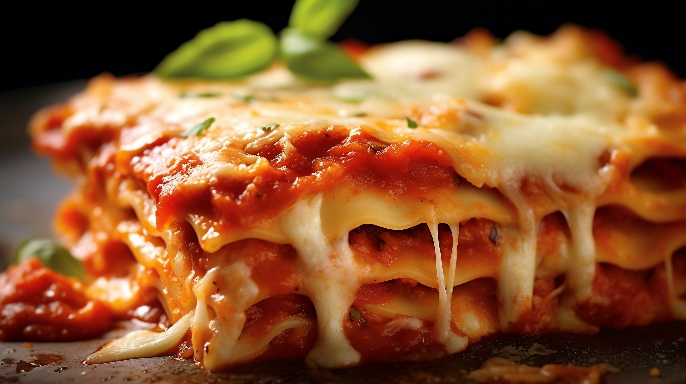
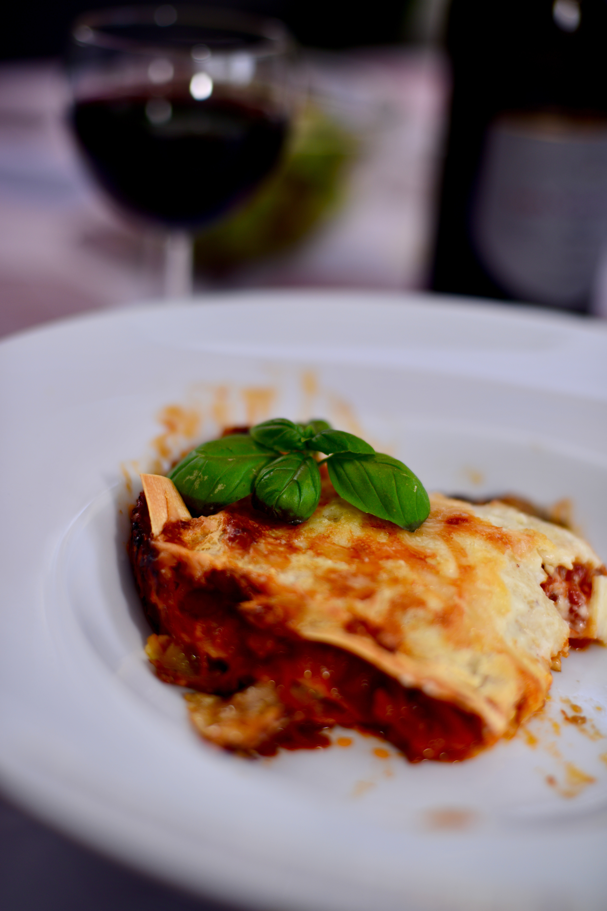
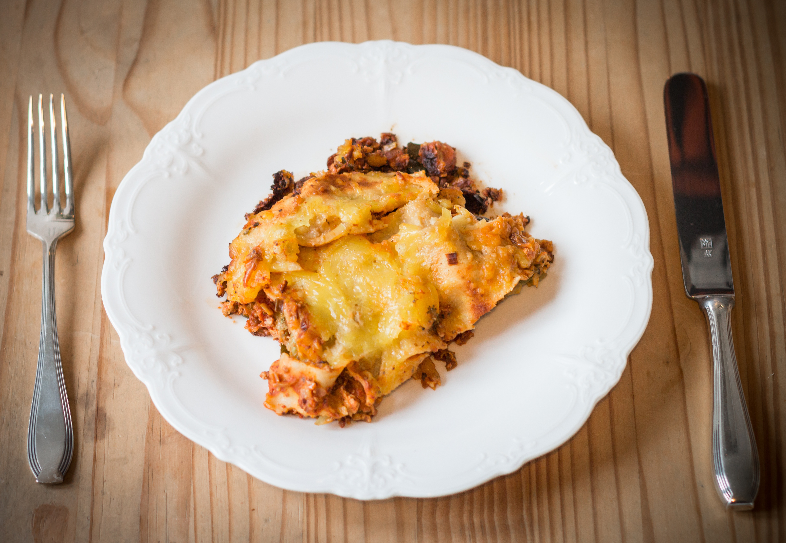
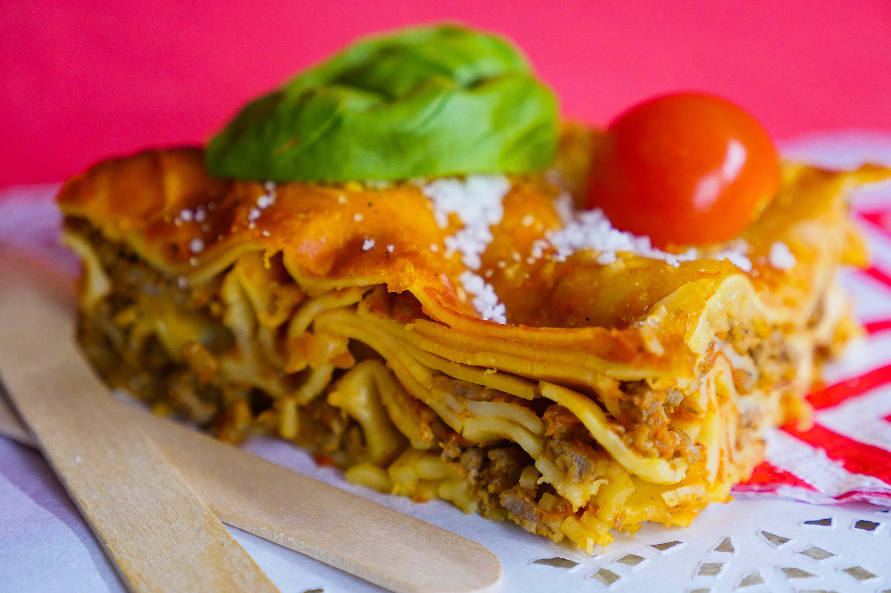

Site Links:
(Back to Home) |
(Credits) |
(Disclaimer)
Recipes:
(Fettuccine Alfredo) |
(Four-Cheese Ravioli) |
(Gnocchi) |
(Lasagna)

An Italian pasta dish comprised of long, flat noodles. It can be served many ways, but its most iconic form is the stacked and layered dish of pasta and ground meat, baked and covered in sauce.
A dish that originated in Italy during the middle ages, considered relatively expensive at the time of its origin. The first recorded recipe was in the early 14th century, which features fermented dough flattened into thin sheets, which were then broiled and sprinkled with cheese and spices. This version of the dish was eaten with a small, pointed stick.
The oldest known written reference to this dish appeared in 1282, as part of a ballad that was transcribed by a Bolognese notary: Pur bii del vin, comadre, e no lo temperare, which translates to "Just drink some wine, my woman, and do not dilute it."


